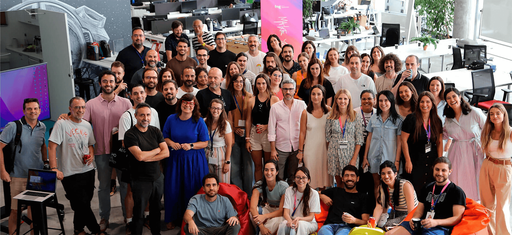

Madrid
Design experiences and build products that transform businesses

Bring Bold Ideas to Life
Our frog studio in Madrid welcomes brave organizations and individuals who are eager to craft focused strategies, realize market-changing ideas and build products and services that advance the human experience.
Contact frog Madrid to:
Contact frog Madrid to:
- Transform culture and adopt an innovation mindset
- Deliver exceptional customer experiences
- Uncover customer insights
- Map emerging market trends and technologies
"In the end, it all comes down to people. It's about understanding ourselves, connecting with one another and empathizing with others. It's about forming teams to envision, design and deliver experiences that transform businesses, services or products, and, ultimately, enrich lives."
"I like to think of us 'frogs' as sculptors, imagining and dynamically shaping ideas and visions, carving them and bringing them to life through an evolving process, much like a sculptor works with stone or marble."
We Work Across All Sectors
Transforming Healthcare for People
We put the patient first, helping companies bring digital innovation and technology to the healthcare and pharmaceutical sectors.
Creating New Experiences in Financial Services
We help financial services companies map emerging technologies and market trends to develop future-proofed strategies.
Building Trust for Retail, Travel and Automotive
We support companies in building and maintaining trust with customers as they reimagine the future of mobility, infrastructure and retail.


Madrid
Get in touch


Cookies settings were saved successfully!